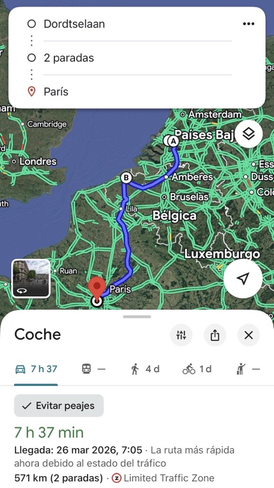
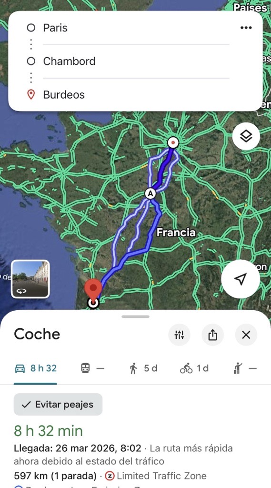
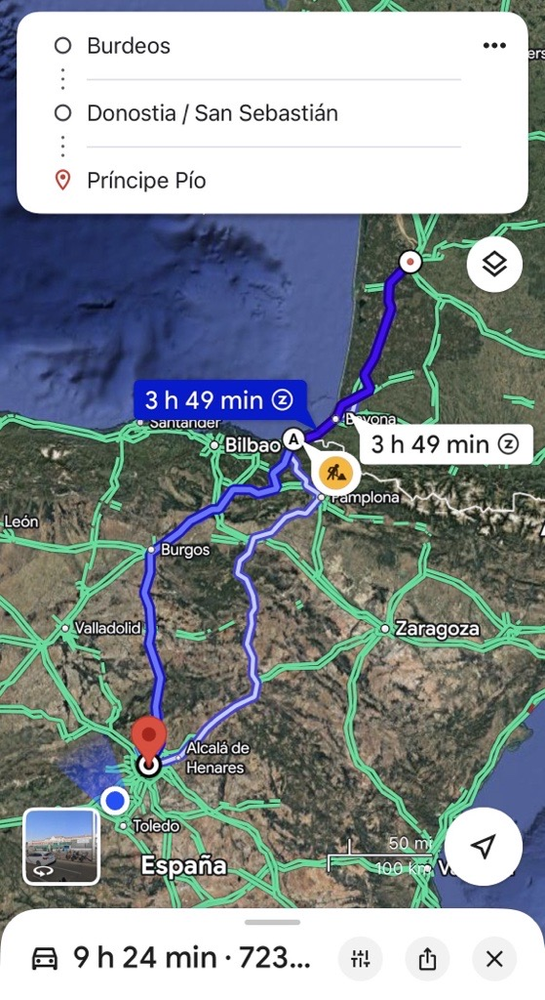
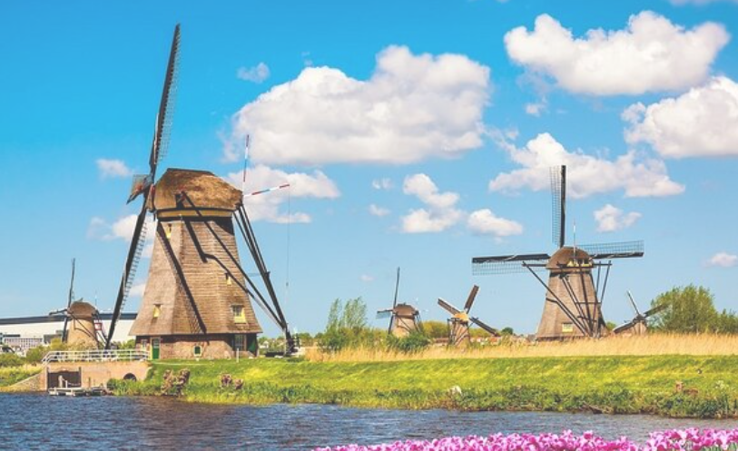
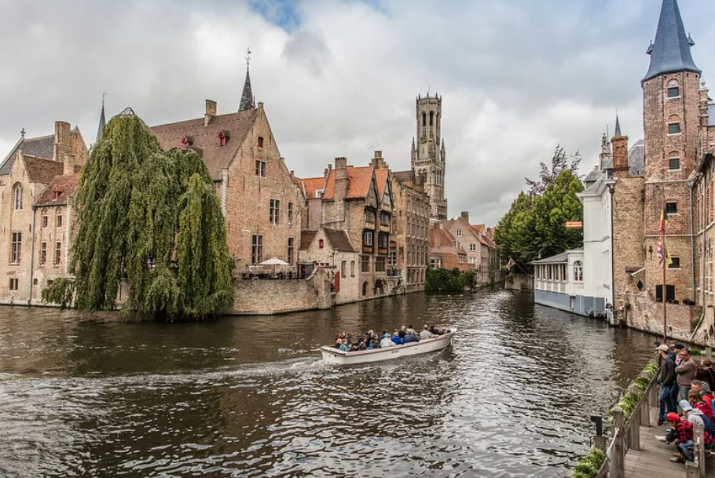
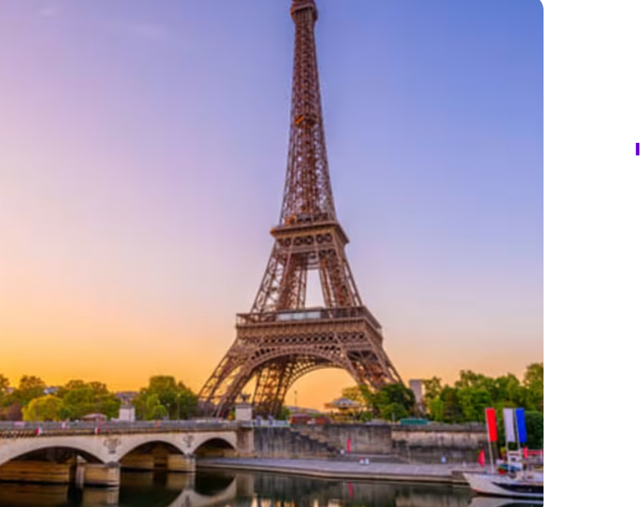
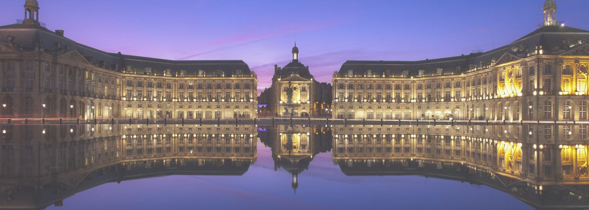
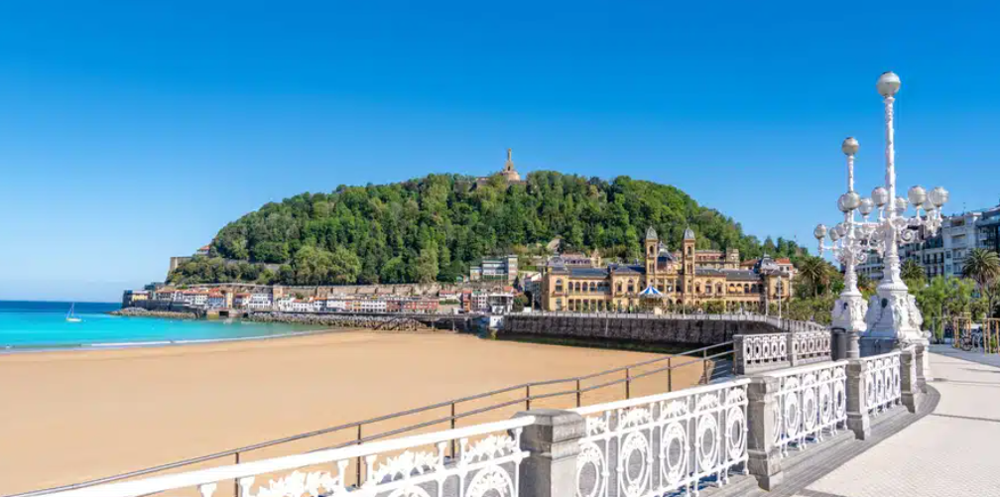

01
Día 1
Miércoles
571 km · 7h 37 min de conducción

Rotterdam → Kinderdijk → Brujas → París
12:30
Rotterdam
Salida hacia Kinderdijk
30 km13:00
Kinderdijk
Visita a los molinos de viento más famosos de Holanda. Patrimonio UNESCO desde 1997.
Parada recomendada14:30
Kinderdijk → Brujas
200 km · aprox. 2h 30 min
Conducción17:00
Brujas
Paseo por el casco histórico medieval, canales y Markt. Imprescindible: chocolate belga y una cerveza local.
3 horas libres20:00
Brujas → París
341 km · aprox. 3h 37 min
Conducción nocturna23:37
París
Llegada y descanso
Noche en París02
Día 2
Jueves
597 km · 8h 32 min de conducción

París → Chambord → Burdeos
09:00
París
Mañana en la ciudad. Torre Eiffel, Campos Elíseos, Louvre.
4 horas libres13:00
París → Chambord
190 km · aprox. 2h
Conducción15:00
Castillo de Chambord
El castillo del Renacimiento francés más grande del mundo. Escalera de doble hélice atribuida a Da Vinci.
Parada imprescindible16:30
Chambord → Burdeos
407 km · aprox. 4h 32 min
Conducción21:02
Burdeos
Llegada. Cena en la ciudad del vino más famosa del mundo.
Noche en Burdeos03
Día 3
Viernes
723 km · 9h 24 min de conducción

Burdeos → San Sebastián → Madrid
09:00
Burdeos → San Sebastián
283 km · aprox. 3h 49 min
Conducción12:49
San Sebastián
La Concha, una de las mejores playas urbanas de Europa. Pintxos en el casco viejo.
2 horas libres15:00
San Sebastián → Madrid
440 km · aprox. 4h 24 min
Conducción19:24
Madrid
Fin del viaje. 1.891 km recorridos en 3 días.
¡Llegada a casa!Distancia total
1.891 km
3 días de ruta
Conducción total
25h 33m
Sin paradas
Países
4
NL · BE · FR · ES
Paradas
8
Ciudades visitadas
Resumen por días
Miércoles — Rotterdam → París · 571 km · Kinderdijk + Brujas
Jueves — París → Burdeos · 597 km · París + Chambord
Viernes — Burdeos → Madrid · 723 km · San Sebastián
Noches
Noche 1 — París
Noche 2 — Burdeos
Noche 3 — Madrid
Consejos prácticos
Francia tiene peajes — lleva tarjeta o efectivo
Reserva parking en París con antelación
En Kinderdijk compra entradas online para evitar colas
Chambord abre hasta las 18h — llega antes de las 17h
Los pintxos en San Sebastián son baratos y espectaculares
Lleva chaqueta — el norte de Europa en abril sorprende
Día 1 · Holanda · Bélgica · Francia
Rotterdam → Kinderdijk → Brujas → París
Ruta del Miércoles
571 km · Molinos UNESCO · Canales medievales · Ciudad de la Luz

Kinderdijk · Holanda
Molinos de Viento
Paseo en barca por los canales · Subir al interior de un molino del siglo XVIII · Ruta en bici por los díques · Centro de visitantes gratuito · Observar los molinos al atardecer · Tienda de recuerdos artesanales · Compra entradas online para evitar colas.

Brujas · Bélgica
Casco Histórico
Paseo en barco por los canales · Subir al Belfort (torre medieval, 366 escalones, vistas increíbles) · Plaza Markt y Burg · Musea Brugge · Chocolate artesanal en Dumon o The Chocolate Line · Barrio del Begijnhof y lago del Amor · Basílica de la Santa Sangre · Paseo por los molinos de Sint-Janshuis.

París · Francia
Llegada a la Ciudad de la Luz
Paseo nocturno por los Campos Elíseos · Torre Eiffel iluminada a medianoche · Pont de Bir-Hakeim para las mejores fotos · Paseo por el Sena · Pl. du Trocadéro para la vista frontal de la Torre Eiffel.
Día 2 · Francia
París → Chambord → Burdeos
Ruta del Jueves
597 km · Torre Eiffel · Renacimiento francés · Capital del vino
París · Francia
La Ciudad de la Luz
Torre Eiffel (reserva entrada online) · Arco del Triunfo y Campos Elíseos · Louvre o Musée d'Orsay · Barrio de Montmartre y Sacré-Cœur · Jardines de las Tullerías · Macaron en Ladurée · Paseo por Saint-Germain-des-Prés.

Burdeos · Francia
Burdeos
Miroir d'Eau (el espejo de agua más grande del mundo) · Place de la Bourse · Barrio Saint-Pierre · Cîté du Vin (museo interactivo del vino) · Paseo por el muelle Quai des Marques · Catedral Saint-André · Tiendas de la Rue Sainte-Catherine · Jardin Public.
Día 3 · España
Burdeos → San Sebastián → Madrid
Ruta del Viernes
723 km · Pintxos · Playa La Concha · Llegada a casa

San Sebastián
La Concha
Playa La Concha · Casco viejo con pintxos en Borda Berri y Bar Nestor · Subir al Monte Igueldo (parque de atracciones y vistas) · Monte Urgull y castillo · Paseo del Boulevard · Helado en Dondoni · Peine del Viento de Chillida · Aquarium de San Sebastián · Playa de la Zurriola (surf).
Total del viaje
1.891 km
3 días · 4 países · 8 ciudades